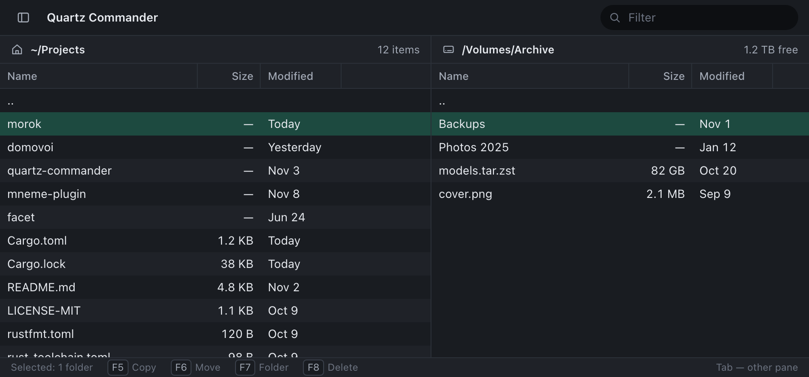
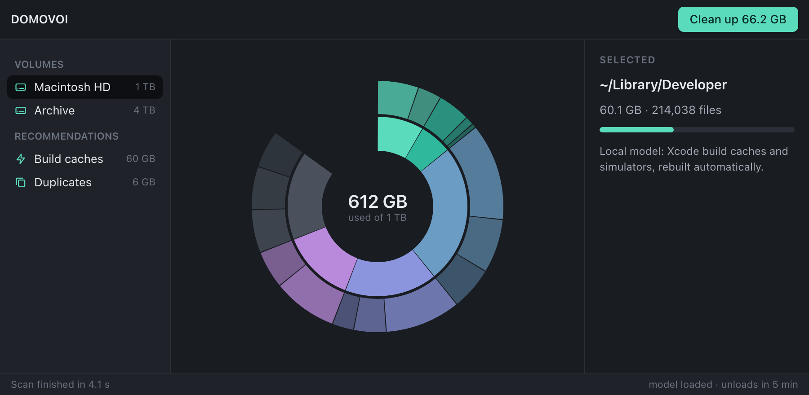
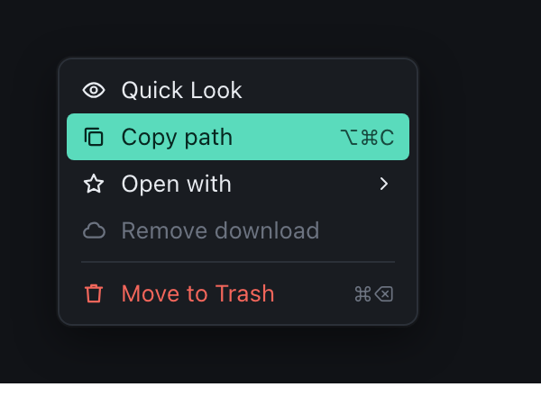
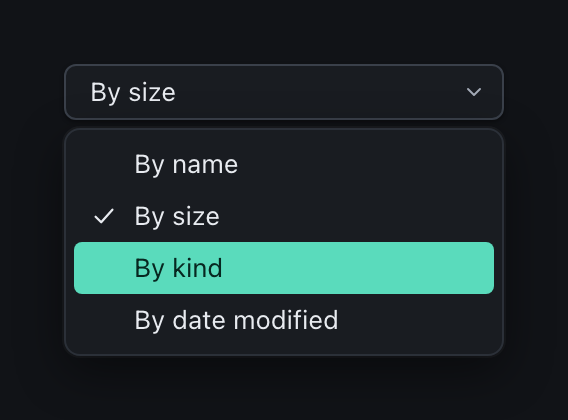

It looks like CSS.
There is no browser.
CSS. No browser.
It looks like the CSS you already write, selector for selector. There is no browser, no web view and no JavaScript anywhere under it.
MOROK is a UI kit for macOS that draws the whole interface itself. You style windows with CSS compiled at build time and change them by writing signals. A UI kit for macOS that draws itself. MOROK is a UI kit for macOS that draws the whole interface itself, through Metal: it lays out, shapes text with Core Text and paints every pixel. You style windows with a subset of CSS compiled into tables at build time and change them by writing signals; a component runs once.

A two-pane file manager built on the kitDrawn through Metal
The kit lays out, shapes text with Core Text and paints every pixel itself. No AppKit controls, no web view. Windows, menus, text input and accessibility go through the system; everything a user sees inside a window is the kit's.
Styled by CSS
109 properties and 7 states, compiled into tables when the application builds. What it does not take, it refuses at the line.
Driven by signals
A component runs once. A signal that changes updates exactly what follows it.
Components, as the kit draws them.
Whole screens
A disk map with a sunburst drawn on a canvas, in the catalog beside the file manager above.

A disk map with a sunburst chartMenus and overlays
Menus, popovers, dialogs and sheets, each open while a signal holds.

A menu with icons and shortcutsTable — a million rows
Only the rows in view have elements, and a scroll allocates nothing.
 A table with sortable columns
A table with sortable columnsButtons
Pressed by a click, by Space and Return, by an assistive technology.
 A primary button in each of its states
A primary button in each of its statesText fields
Core Text shapes the text; the kit lays out the lines and draws the glyphs.
 A text field in each of its states
A text field in each of its statesSelect and combobox with a name long enough to wrap onto a second line
A list that drops down under its control, as wide as the control.

A select with its list openA component in Rust. Its look in CSS.
fn sign_in(mount: &mut Mount<'_>) -> ElementId {
let name = mount.runtime().signal(String::new());
let field = TextField::new(name).placeholder("Name").mount(mount);
let button = Button::new("Sign in").primary().mount(mount);
mount.element().class(CLASSES.form).child(field).child(button).id()
}
.form {
display: flex;
gap: var(--space-3);
padding: var(--space-4);
border-radius: var(--radius-md);
background-color: var(--color-surface);
}
What it is not.
- A web viewNo browser and no JavaScript.
- A wrapper of AppKitThe kit lays out, shapes text and paints itself.
- Cross-platformmacOS 26 on Apple Silicon.
- All of CSSA subset the compiler checks.
Start with one line.
morok = { git = "https://github.com/supostat/morok" }morok = { git = "https://github.com/supostat/morok", rev = "0e0f5797e9bdc3692a6fc1756602b035c3b31a06" }
macOS 26 or later on Apple Silicon · Rust 1.94 or later